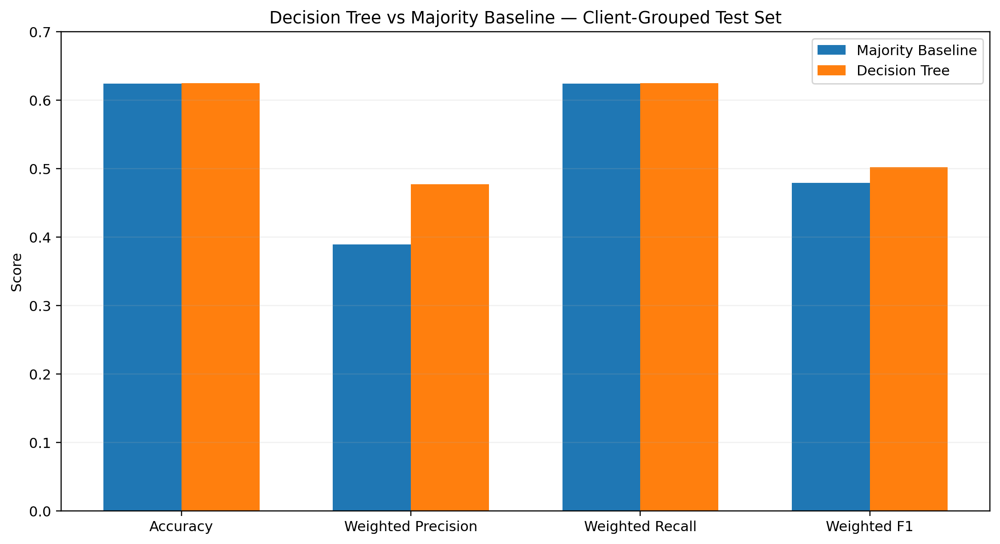
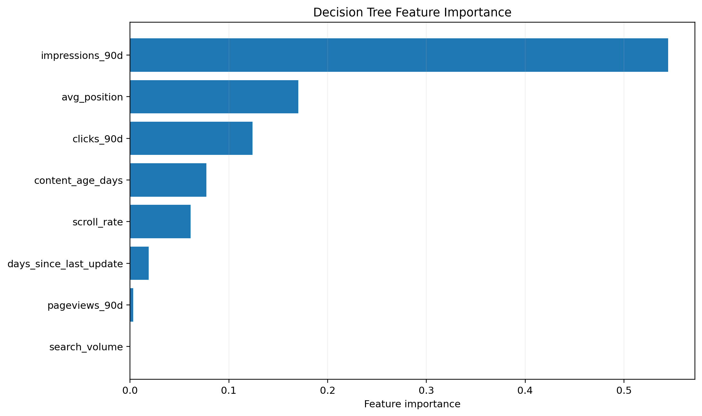
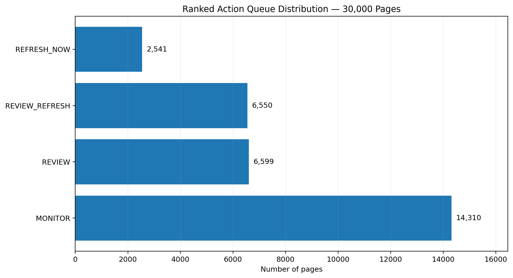

Which Content Pages Should Be Prioritized for a Possible Refresh?
A machine-learning decision-support analysis for turning search demand, content freshness, traffic and engagement signals into a ranked human-review queue.
Abstract
Content teams often need to decide which existing pages should be reviewed first for a possible refresh. This study uses an anonymized FlyRank ML Internship content-performance dataset containing 30,000 content records with search, traffic, engagement, freshness, and performance signals. A shallow Decision Tree was trained to predict the observed trend_direction using 16 search, content, traffic, and engagement features, and was evaluated against a majority-class baseline using a client-grouped held-out test set. The Decision Tree achieved 0.625 accuracy and 0.502 weighted F1, compared with 0.624 accuracy and 0.479 weighted F1 for the baseline. The resulting analysis is intended as a decision-support tool that helps content and SEO teams prioritize pages for human review rather than automatically deciding which pages should be refreshed.
Introduction / Problem Statement
Which pages deserve attention first?
Content teams rarely have enough time to review every existing page with the same level of attention. When a library contains thousands of pages, the practical problem is not simply measuring performance; it is deciding where limited editorial effort should start.
A one-signal rule can miss context. A page can have high search demand while still being relatively fresh, while an old page can have little search opportunity. This project therefore treats refresh prioritization as a decision-support problem rather than an automatic editorial decision.
From signals to a human-review queue
The analysis combines observable search, content, traffic, engagement and freshness features to predict the observed movement label and compare that signal with a simple majority baseline.
Data & Public-Safe Data Contract
The study uses the anonymized content-performance release supplied for the FlyRank ML Internship. The available dataset contains 30,000 rows and 44 columns. It includes content metadata, search-demand measures, aggregate performance, engagement, freshness, and trend fields.
| Data area | Available signals | Role in this study |
|---|---|---|
| Content metadata | content type, intent, word/character counts, age | Context and content characteristics |
| Search demand | search volume, competition, CPC | Opportunity context |
| 90-day performance | impressions, clicks, pageviews, sessions, users | Model features |
| Engagement | engaged sessions, scroll events, CTR, engagement/scroll rates | Model features |
| Freshness | content age, days since last update | Model features and queue logic |
| Recent windows | last-30-day and previous-30-day aggregates | Available for analysis; not all fields enter the final model |
Methodology
What the model sees
The model uses 16 numeric features covering search demand, competition, CPC, content size, 90-day performance, freshness, CTR, position and engagement.
The prediction target is the observed trend_direction. The fields trend_direction and trend_pct are excluded from the feature set to avoid direct target leakage.
Client-grouped holdout
A grouped 80/20 holdout was created with GroupShuffleSplit using client_id. The train and test groups were checked for overlap. The final comparison therefore asks whether the model provides signal when evaluated on held-out client groups rather than relying only on a random row split.
Majority-class baseline
The baseline always predicts the most common class in the training set. It provides a deliberately simple reference point for judging whether the Decision Tree adds useful predictive signal.
Decision Tree
A shallow DecisionTreeClassifier(max_depth=4, random_state=42) was fitted on the same training split. Accuracy, weighted precision, weighted recall and weighted F1 were then calculated on the same held-out test set.
Results
The grouped split gives a more conservative picture.
The Decision Tree was compared with the majority-class baseline using the same client-grouped held-out test set. Accuracy changed only slightly, while weighted precision and weighted F1 improved. The result suggests some additional predictive signal, but it is not a highly accurate classifier.
| Model | Accuracy | Weighted Precision | Weighted Recall | Weighted F1 |
|---|---|---|---|---|
| Majority Baseline | 0.624 | 0.389 | 0.624 | 0.479 |
| Decision Tree | 0.625 | 0.477 | 0.625 | 0.502 |

Which signals mattered most?
The strongest recorded feature importance was impressions_90d (0.544663), followed by avg_position (0.170389) and clicks_90d (0.124131). These are model-specific importance values, not causal effects.

How the review queue is distributed
The action playbook ranks all 30,000 pages using the refresh-prioritization logic and assigns a reason code/action for human review.

Limitations & Honest Framing
The analysis cannot show that refreshing a page causes higher rankings, clicks, impressions, traffic or engagement.
The grouped Decision Tree reaches 0.625 accuracy, only 0.001 above the majority baseline. It should not be presented as a highly accurate automated classifier.
Search behavior, content strategy, client mix and external ranking conditions can change. Future data may behave differently.
The available features do not capture every editorial, business, competitive or search-intent consideration.
Recommendations are decision support. Editors should check relevance, accuracy, intent, links, facts, brand requirements and expected effort before acting.
Ranked Recommendations
REFRESH_NOW
High search volume combined with a long time since update. Start human review here when editorial value and effort justify action.
REVIEW_REFRESH
Pages showing freshness concerns. Check whether information, examples, links and search intent are still current.
REVIEW
Pages with strong search opportunity that deserve inspection even when freshness alone does not trigger a refresh.
MONITOR
Lower-priority pages can remain under observation rather than consuming immediate editorial capacity.
Reproducibility
The analysis is documented in the project repository. The capstone notebook contains the final grouped validation and results, while the weekly notebooks provide the progression from research question to modeling and action playbook.
Core notebooks
Acknowledgments & Data Credit
This capstone was completed as part of the FlyRank Machine Learning Internship. Data and learning context were provided through the internship program.
Built on the FlyRank ML Internship dataset — FlyRank ↗